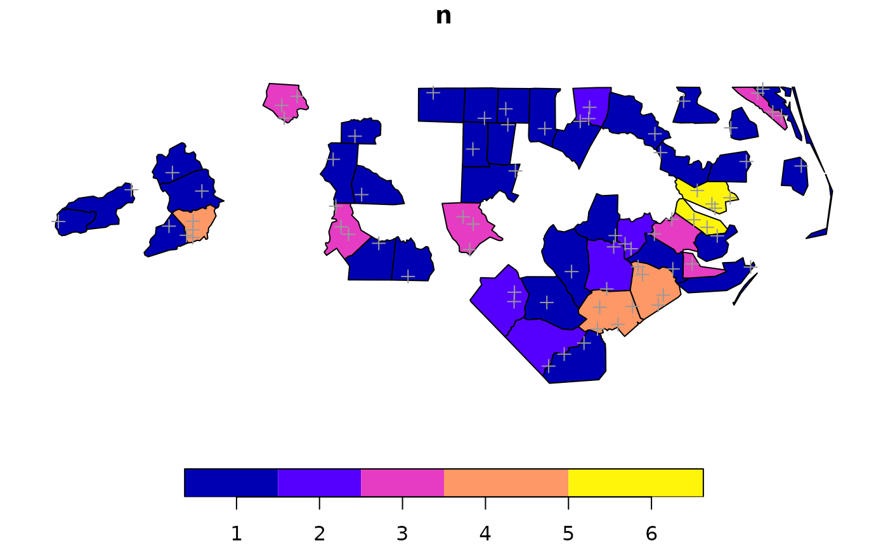
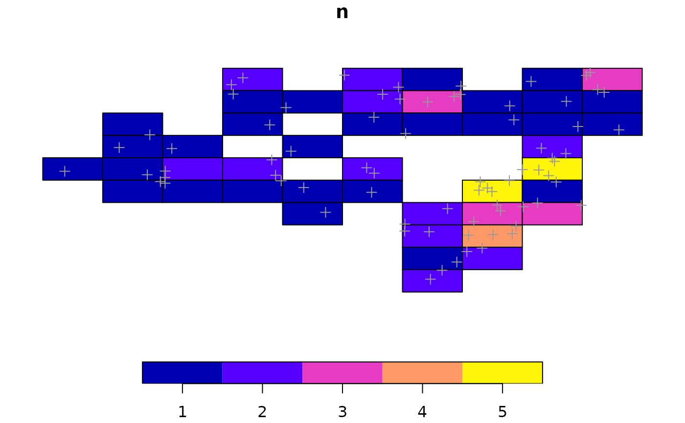

An extended version of dplyr::count() that makes it easier to count the
occurrences of features from data that intersect with features from a second
sf object (set by y) or created by passing x or data to st_make_grid_ext().
Similar to count_features() and the two functions may be combined in the
future.
Usage
count_sf_ext(
data,
x = NULL,
y = NULL,
join = sf::st_intersects,
largest = TRUE,
wt = NULL,
sort = FALSE,
replace_na = FALSE,
keep_na = FALSE,
lims = NULL,
geometry = TRUE,
.id = "id",
name = NULL,
...
)Arguments
- data
Data to count in relationship to y
- x
Optional sf object passed to
st_make_grid_ext(). Defaults toNULL.- y
If
NULL(default), y defaults to ansfobject created byst_make_grid_ext()using x or data (if x isNULL) as the x parameter forst_make_grid_ext(). If notNULL, y must be ansfobject that has a column with the same name as .id (defaults to "id").- join
geometry predicate function with the same profile as st_intersects; see details
- largest
logical; if
TRUE, returnxfeatures augmented with the fields ofythat have the largest overlap with each of the features ofx; see https://github.com/r-spatial/sf/issues/578- wt
<
data-masking> Frequency weights. Can beNULLor a variable:If
NULL(the default), counts the number of rows in each group.If a variable, computes
sum(wt)for each group.
- sort
If
TRUE, will show the largest groups at the top.- replace_na
If
TRUE, replace NA values from count with 0.- keep_na
If
TRUE, filter NA values from count. Ignored if replace_na isTRUE.- lims
Optional numeric vector with minimum or both minimum and maximum count values. If provided, any values below the minimum are set to that minimum and any values above the maximum as set to the maximum. If only one value is provided, it is assumed to be a minimum limit.
- geometry
If
TRUE(default) return asfobject. IfFALSE, return a data frame.- .id
A name to use for the cell id column. Defaults to "id".
- name
The name of the new column in the output.
If omitted, it will default to
n. If there's already a column calledn, it will usenn. If there's a column callednandnn, it'll usennn, and so on, addingns until it gets a new name.- ...
Arguments passed on to
st_make_grid_extncol,nrowUsed to set n if either are not
NULL; defaults toNULL. row and id are added as columns to the grid if they are provided.gutterDistance in units between each column cell; gutter effectively serves as a margin as the negative buffer is applied to all cells (including those at the edges of the grid).
descIf TRUE, reverse standard order of cell id numbering; defaults
FALSEnIf n is NULL and square is
TRUE, the grid is set automatically to be 10 cells wide, Default:NULLwhat"polygons", "corners", "centers"; set to centers automatically if style is "circle", "circle_offset" but a buffer is applied to return circular polygons.
styleStyle of cell to return with options including "rect", "square", "hex", "flat_top_hex", "circle", "circle_offset"
filterIf
TRUE(or if trim isTRUE) filter grid geometry by x using st_filter_extcrsCoordinate reference system of bounding box to return; defaults to
NULLwhich maintains the crs of the input object.unitUnits for buffer. Supported options include "meter", "foot", "kilometer", and "mile", "nautical mile" Common abbreviations (e.g. "km" instead of "kilometer") are also supported. Distance in units is converted to units matching GDAL units for x; defaults to "meter"
cellsizenumeric of length 1 or 2 with target cellsize: for square or rectangular cells the width and height, for hexagonal cells the distance between opposite edges (edge length is cellsize/sqrt(3)). A length units object can be passed, or an area unit object with area size of the square or hexagonal cell.
trimIf
TRUE, x is trimmed to y withst_trim().
Value
A sf object or a tibble (if geometry = FALSE) with a column
counting occurrences of features from data.
Examples
nc <- sf::read_sf(system.file("shape/nc.shp", package = "sf"))
data <- sf::st_sample(nc, size = 75)
# Count data based on nc
count <- count_sf_ext(data = data, y = nc, .id = "FIPS")
#> Warning: attribute variables are assumed to be spatially constant throughout all geometries
plot(count[, "n"], reset = FALSE)
plot(data, col = "gray60", pch = 3, add = TRUE)

# Count data based grid created by passing nc to st_make_grid_ext
count_grid <- count_sf_ext(data = data, x = nc, .id = "FIPS")
#> Warning: attribute variables are assumed to be spatially constant throughout all geometries
plot(count_grid[, "n"], reset = FALSE)
plot(data, col = "gray60", pch = 3, add = TRUE)
